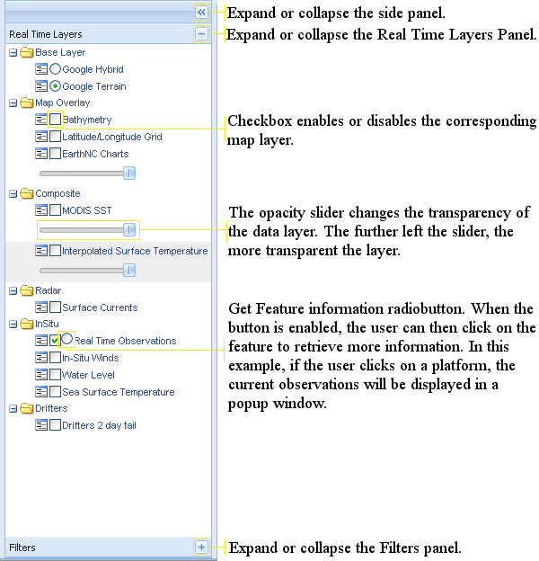
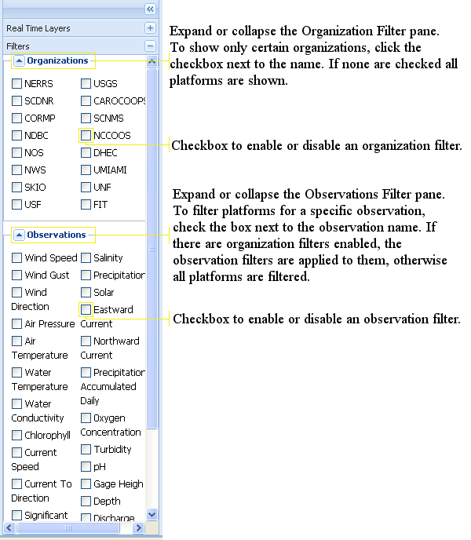
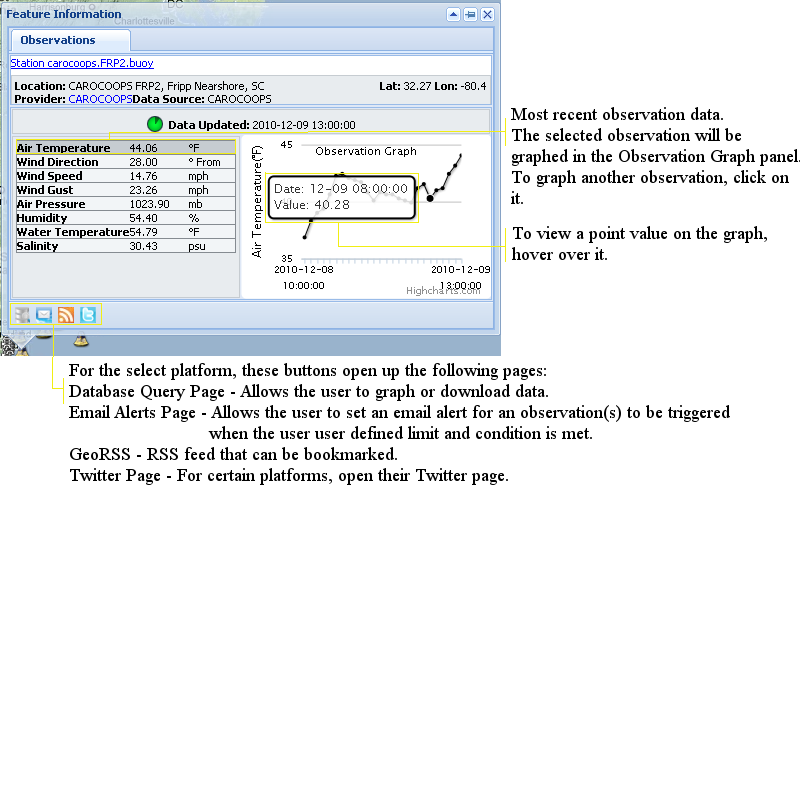
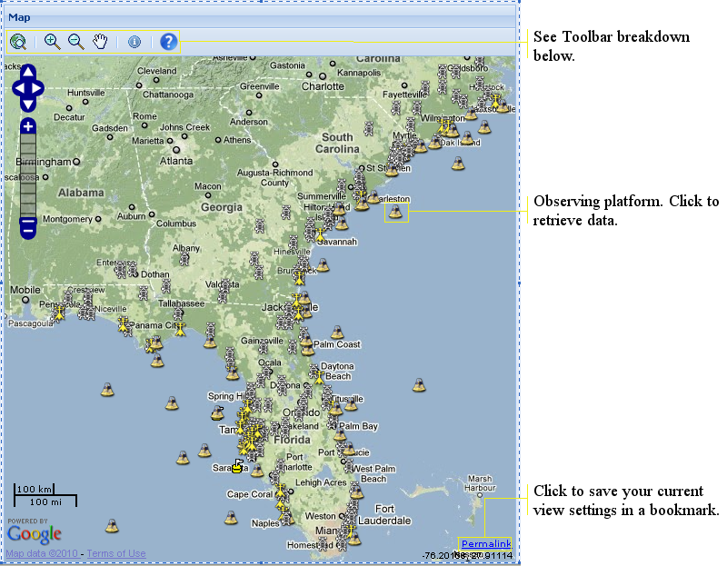
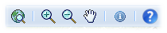
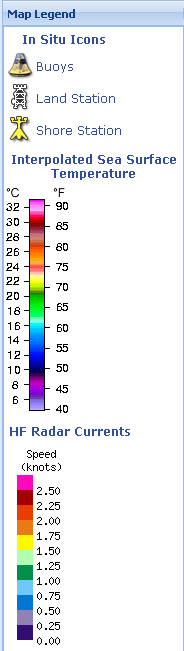

SECOORA's Interactive Map
The map consists of three main parts the Data Layer Panel on the left side of the screen, the Map in the center and the Legend Panel on the right.
Data Layer Panel

Filters Panel
Filters allows the user to display platforms depending on the Organization and/or Observation filters enabled.
By default, no filters are applied.

Observation Data Popup
This popup is triggered by clicking on a platform on the map.

Map Panel

ToolBar

Zoom the map out to its extents. |
|
This allows you to draw a box on top of the area you wish to zoom in to. Click the icon on the tool bar, then click and hold the left mouse button on a point on the map and draw the zoom box around the area to zoom, then release the mouse button. |
|
This allows you to draw a box to zoom out to. Click the icon on the tool bar, then click and hold the left mouse button on a point on the map and draw the zoom box around the area to zoom, then release the mouse button. |
|
Pan the map. Click this icon, then click and hold the left mouse button and move the mouse to pan the map. |
|
Query information from a data layer. For example, if Real Time Observation is enabled and the radio button is clicked, clicking on a buoy or land station will display the current measurement information in a popup window (described above). |
|
|
|
Brings up this help file. |
Legend Panel
The Legend Panel shows the various icons and gradients used for different map layers.
